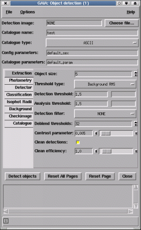

Automatic source detection is performed using the "Object detection..." toolbox activated from the "Image-Analysis" menu. This provides the ability to automatically detect and parameterise all the objects on an image. These objects are then identified by displaying ellipses over the image and are available for interactive inspection. The resultant measurements are displayed in a catalogue window which can be used to inspect the individual values, select data on the bases of range limits and change the appearance of the ellipses.
The toolbox uses the EXTRACTOR and SExtractor programs to do the actual detections. EXTRACTOR is just a Starlink modified version of Emmanuel Bertin's SExtractor. EXTRACTOR and SExtractor are briefly described in Starlink User Note 226 (SUN/226). Consult this for additional pointers to help. The internals of SExtractor are described in other documents that are reference in SUN/226 (like the SExtractor user manuals).
